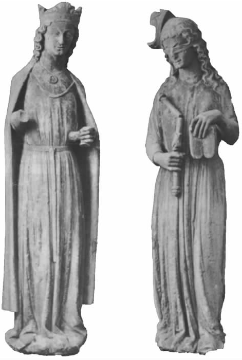

犹太教起源于何时？它真是“世界上最古老的宗教”吗？当然不是。如果你相信专家学者对人类进化的描述，就不会认为犹太教最古老。数万年前，古老的石器时代的人们肯定有宗教信仰，举行宗教仪式，这可以从他们画在岩洞里的壁画、他们埋葬死者的方式中分辨出来。摩西还是法老宫殿里的青年时，埃及的庙宇和宗教信仰就已然存在很久了。
但也许，你宁愿相信简朴的《圣经》经文。这种情况下，就要看你对“犹太教”的界定了。亚伯拉罕被视为犹太民族的祖先（顺便提一句，也是阿拉伯民族的祖先），你认为亚伯拉罕信仰的宗教（大约在公元前18世纪）就是犹太教吗？
大约亚伯拉罕之后四五百年，摩西在西奈山上领受十诫，这才算是犹太教的开端吗？还是说，要等后来希伯来圣经（《旧约》）成书之后，才算是有了犹太教呢？
无论以何时作为犹太教起源，都存在一个严重的问题。我们现在所认定的犹太教，在许多方面都与以《圣经》为本的这个宗教存在差异。比如，犹太人并不是按字面意思相信“以眼还眼”；还有，尽管希伯来圣经中并没有关于生死的明确内容，犹太人的传统还是非常赞成“死后复活”的观点。所以，声称我们今天所知的犹太人的宗教有三四千年之久，这是相当错误的。我们可以说的只能是，犹太人的宗教之根，即《圣经》中最早产生的部分，才有三四千年那么古老。
犹太人如何纪年？
传统上，按照《圣经》，犹太人将历史回溯到亚当和夏娃时代。创造亚当的时间被确定为公元前3760年，这就解释了为什么仍适用于宗教事务的“犹太纪年”会早于基督纪元那么多年。比如，公元1998年是AM5758年，而公元2000年是AM5760年（AM是拉丁文“创世纪元”的缩写，即自上帝创造世界那年算起）。
但是，本书谈及的“犹太教”所指的并不限于其根源。我们说的是“拉比犹太教”，即约公元2世纪以降，由拉比系统阐释、以《圣经》为根本的生活方式。这种“拉比犹太教”是当今依然存在的各种犹太教派的基础。确实，改革派犹太教徒不像正统派犹太教徒那么倚重拉比的解释（正统派与改革派之间的差异将在第七章予以描述）。但无论改革派还是正统派，都以拉比犹太教为自己信仰与行为的参照点。
有人认为，拉比犹太教是认可“双重《托拉》”的宗教，因为它既认可成文《托拉》（即希伯来圣经），也认可“口传《托拉》”或者说传统，书面《托拉》要靠口传《托拉》阐释和完善。［你可能见到过“成文律法”与“口传律法”这样的词，但是“律法”（law）不能用以准确翻译“托拉”（Torah），因为“托拉”更像是“道”或者“教导”。］
现在，基督教徒和犹太教徒都倾向于将他们的精神源起回溯到摩西、亚伯拉罕和亚当与夏娃（厄谢尔主教将创造亚当与夏娃的日期估算为公元前4004年，与犹太教的公元前3760年小有差别）。基督教徒声称，希伯来圣经《托拉》是他们自己的律法。和犹太教徒一样，他们并不从简单的字面意义来看待希伯来圣经。然而，基督教徒解释希伯来圣经所依据的不是拉比的“口传《托拉》”，而是《新约》。
这种解释上的差异直到保罗书信完成之后才明晰起来。上溯到某个时间点，也许是公元1世纪中期，即耶稣之后的一代，犹太教和基督教之间并没有分界线。实际上，耶稣本人从不认为自己所传的宗教不是犹太教，或者说不是《托拉》；“莫想我来要废掉律法和先知。我来不是要废掉，乃是要成全。”（《马太福音》，5：17）如果问耶稣或任何一个门徒，你们信奉什么教，他们会答，“犹太教”。
那么，这两个宗教为什么会走向分裂，变得虽然紧密相关，但是各自独立？个中原因，犹太教有传统的解释，基督教也有。
犹太教的传统解释：犹太教是一个古老的宗教，是上帝在西奈山授予摩西的，犹太人一成不变地坚守至今。公元1世纪的某个时期，由耶稣创始、保罗追随，建立了一种新的宗教，从犹太教剽窃了重要的篇章，捐弃十诫，掺杂进一些稀奇古怪、荒谬不稽的观点，例如声称耶稣就是弥赛亚，甚至是上帝的“化身”。
基督教的传统解释：犹太教是一个古老的宗教，是上帝在西奈山授予摩西的，由犹太人谨守至今。公元1世纪的某个时期，耶稣到来，“完善了”这一宗教，并予以身体力行。不幸的是，犹太教徒没有感念耶稣之德，仍顽固地死守过时的宗教形式。
这两种解释的共同之处在于，都承认存在两种截然不同的宗教，每种宗教都是在某一特定的时间点上羽翼丰满地从天而降（或者说创立），一个是在摩西时代，另一个是在耶稣时代。二者的分歧点在于对第二件事的评价以及第二件事与第一件事的关系上。但是，二者都承认，犹太教是“母亲”，基督教是“女儿”，虽然在犹太教看来，基督教是迷途的女儿。
学界的看法是，两种解释都太过离谱。犹太教大约到公元前1400年前后的某一天才算瓜熟蒂落，公元30年左右耶稣——甚至是一代之后的保罗——才公开传播基督教义，或者说才有成熟教会里的那种训示。两种宗教都经历了数世纪的发展之后，其经书、宗教惯例及信仰才获得了“传统”的形式。二者随着环境和观点的变化而共存、发展，直到今天依然如此。实际上，犹太教和基督教甚至在今天还一如既往地凭借现代知识积极地重构自身，完善道德观念，重新理解世界上的问题。
看似有些怪异的是，拉比犹太教的《塔木德》以及其他的立教经文，实际上比基督教的立教经文《福音书》成书时间更晚 。最近，教皇说犹太教是基督教的“兄长”，他错了；当然，二者都是希伯来圣经的“孩子”，但就立教经文（《新约》、《塔木德》）而言，基督教才是“兄长”。
今天你游览以色列时，可以看看犹太教会堂和基督教会堂，也可以看看伊斯兰教、德鲁兹教派、巴哈伊教和其他宗教的圣地，体验一下这个国家派别众多、风格多样的敬神活动。如果你还渴望增长知识、充实精神世界，可以在多家培养拉比的犹太神学院或者不同宗教、不同派别的神学院中选上一两所，研读上一段时间，或者坐在某位大学者面前，聆听启示。
你可以做很多与耶稣时代相同的事。很多人都这样做过。约瑟是犹太祭司马塔赛阿斯的儿子，后世更了解的是他的另一个身份，即古罗马帝国的战士和历史学家弗莱维厄斯·约瑟夫。公元1世纪50年代，约瑟夫还是个十几岁的少年时就曾有过这样的经历，他来以色列就是为了个人的精神追求。生命的后期，他在罗马处于皇帝的恩宠之下，在自传《犹太古史》这部皇皇巨著中记录了自己的经历。
按照约瑟夫的说法，公元1世纪，犹太教徒分成四个派别，或称“哲学派别”。法利赛派与他联系最紧密，他声称该派教徒生活朴素，严守理性。他们尊重长者，相信神佑、意志自由与个人不朽；他们引导民众祷告、献祭，深受民众爱戴。撒都该派不承认死后复活，只遵守写在经书中的明确教义。艾赛尼派，许多学者都是通过《死海古卷》才了解到的一个教派，主张一切都归于上帝，传播灵魂不朽论。他们的与众不同之处在于，生活方式上恪守美德，为保持极度洁净而远离耶路撒冷圣殿中的献祭活动，财产共享；他们不结婚，不蓄奴仆。约瑟夫声称自己曾师从一位名叫巴努斯的艾赛尼派教徒三年，巴努斯“居于沙漠，只穿树叶，只吃野生的食物”。第四个教派，约瑟夫与之没有联系，称之为狂热派；该派与法利赛派在很多方面都有一致见解，只不过，他们只遵守上帝的规约，舍此之外，时刻准备为自由而死。
在公元1世纪的巴勒斯坦，宗教生活比约瑟夫提到的还要丰富。当时没有在现代以色列所能见到的穆斯林、德鲁兹教派或者巴哈伊教。但是，有撒马利亚教派，这个犹太教派有鲜明的民族传统特征，在盖里济姆山上建有圣殿。还有为数不少的神秘教派，他们声称掌握了通往“天国宫殿”的密传心法，以及接近上帝的途径。也有天启异象派，他们称颂上帝的审判和世界末日的来临。在少年约瑟夫开始精神追求的时代，必然存在一些追随耶稣的团体，尽管这些团体似乎没有引起约瑟夫的关注。除各种犹太教派之外，还有异教和一些“神秘”教派组织遍布古罗马帝国境内，拜火教盛行于东方国家。约瑟夫对此几无兴趣，但他显然通晓那个时代的希腊文化，尤其是希腊历史和哲学。
这样看来，公元50年基督教依然还是一个不起眼的犹太教支系，而犹太教本身在古罗马帝国境内也不过是个少数人信仰的教派。凭借历史的后见之明，我们知道，追随耶稣的小宗教团体脱离“父亲”即犹太教，在几个世纪内就代替了古老的异教崇拜，成为统治欧洲的重要宗教信仰，法利赛派“哲学”则演变为拉比犹太教，并且，自公元7世纪起，伊斯兰教秉持了与犹太教相似的神学观和社会观，并将其传播到亚非的大部分地区。
但是，为什么 耶稣的追随者会最终脱离他们的犹太教友？为什么宣扬爱邻人的两个宗教之间开始相互仇恨？
《新约·使徒行传》第15章记载，大约在公元50年和60年之间，刚刚组成的基督教派的领导者之间发生了异常激烈的对峙。保罗曾一直强烈反对追随耶稣的教徒，此时，他已经在前往大马士革的途中经历过著名的异象，加入了原本被他蔑视的教派之中。他与朋友巴拿巴一起从叙利亚的安条克回来，游说耶路撒冷教会领袖支持他的主张，即皈依基督教的外邦人不必行割礼，不必遵守“摩西的律法”。
保罗的观点在耶路撒冷的会议上引起了激烈讨论。保罗和彼得（两人都是犹太人）认为，放松摩西律法的严格要求能让外邦人更容易皈依基督教，会议上的其他人则认为，完全服从律法的规定至关重要。最终，耶稣的兄弟雅各提出，不应该给外邦人太重的负担，但至少应该要求外邦人“禁戒被偶像玷污的食品、禁绝奸淫，禁食勒死的牲畜，禁食血”（《使徒行传》，15：20）；按《新约》的描述，这个折衷办法被接受、写入信中，发往安条克、叙利亚与西利西亚等地。
但是，我们从别处读到，这一折衷方案并没有让各方都接受。一方面，保罗自己反复声明“摩西的律法”（其中包括禁食勒死的牲畜及其他禁戒）过时了；另一方面，那些严格奉行“摩西的律法”的“犹太基督教徒”（也许雅各就是其中一员），他们曾一度辉煌过，虽说也被保罗派基督教徒边缘化，但他们独特的本色还是延续了数世纪之久。我们只能根据他们关于耶路撒冷会议的记载来进行推测，因为是保罗的门徒撰写了《新约》，并以此为据形成了后来的基督教。历史是由胜利者书写的，也以同样的方式赋予胜利者对事件所作的阐释以正当性。
不管耶路撒冷会议的真相如何，《使徒行传》的记载突出了犹太教徒和基督教徒走向分裂的一些因素。显然，分歧点在于《托拉》中的某些律法是不是还有适用性。这不仅仅是有关教义的纷争，还是一个严重的社会分裂。一个民族，或者说一个宗教社团，往往通过法律、习俗以及宗教仪式表现其身份特质。小的分歧或者个体的背弃有时可以包容，然而，集体放弃律法就可能被视为对身份的拒斥。保罗计划接纳外邦人加入信徒的行列，按他的说法，即“将野橄榄枝嫁接”到茂盛的橄榄树根上（《罗马书》，11：17）；这个想法与犹太教徒以自己为一个特殊民族或社团的思维方式无法相容。它不仅没能将“犹太人和外邦人”联合起来，反而催生出两个相互抵触的团体，它们都自称是“真正的以色列人”。
还有一点《使徒行传》记载得很清楚：公元50年之前，耶稣的追随者就已经形成一个与众不同的团体，他们反对耶路撒冷的犹太教领袖，也遭到那些犹太教领袖的反对。其他的“敌对”团体，比如死海教派，虽脱离耶路撒冷方面的领导，却没有形成新的宗教。为什么有这样的差别呢？
声称耶稣就是上帝应许的弥赛亚，这一论断本身还不足以解释分裂的原因；对其他教派的此类断言并没有产生如此深远的影响。而且，一个团体宣称一位逝去的死者为弥赛亚，还是有些不同寻常；每个人都清楚，罗马加在犹太人身上的枷锁比以往更沉重，上帝应许的和平时代还遥遥无期，此时宣称救世主弥赛亚已经降临，未免有些似是而非。
并非只有一个动因，而是教义差别、社会条件和外部事件等多方面因素的特定结合，才使得基督教开始了一个不同于犹太教的发展过程，尽管它与犹太教有着密切的关系。公元70年，罗马人毁坏耶路撒冷圣殿，加剧了这一分化。基督教徒将这个事件解释为上帝对犹太人的弃绝，对自己信仰的坚振。犹太教徒则将其解释为上帝惩罚他们所犯的罪，就像是父亲惩戒儿女一样，而不是弃绝他们。从更务实的层面来看，耶路撒冷遭劫之后，罗马帝国的皇帝韦斯巴芗对所有犹太人征收丁税，这就让人产生强烈的物质动机去疏离犹太教，与罗马帝国结盟。
确实，自公元70年之后，两个宗教再也没有回到过去。基督教和犹太教对各自的界定相互对立，教义分歧进一步强化。基督教徒形成了一套针对犹太人的“歧视教义”，造成许多惨剧和流血事件，直到后来，“歧视教义”脱离基督教背景，在纳粹种族大屠杀事件中达到极致。
公元70年之后，犹太教徒和基督教徒都开始着手完成一项重要任务，即确定自己的身份。对于今生和来世，他们相信些什么呢？应该怎样组织自己的社区呢？应该采用哪种祷告形式、庆祝哪些特殊的宗教节日、举行哪种宗教仪式呢？
对基督教徒来说，耶稣基督具有至关重要的意义，他们因此便投入大量精力界定自己的信仰。“三位一体”这一概念一直存在争议，那些不同意主流观点的往往会被斥为异端而受到迫害。犹太人否认基督教徒关于耶稣的说法，因此便遭逢特别的指责，被视为“基督的敌人”。犹太教被斥责为过时而不值一信的宗教。基督教会的神父们虽然宣扬博爱精神，却公然表示憎恶犹太人和犹太教，这就使排犹主义论调影响陡增，而排犹主义原本只是偶尔出现于异教经典作家笔下；他们宣扬，犹太人“杀害了基督”。
一样的经文，两样的宗教
奥利金是基督教神父，死于公元254年，生活于巴勒斯坦的凯撒里亚；同代犹太人中，有一位是太巴列的拉比约哈南。他们两人都评论过《圣经》中的《雅歌》；都将《雅歌》解释为讽喻。对于奥利金来说，《雅歌》讲的是上帝或者基督与祂的“新娘”，即教会之间的故事；对于约哈南来说，《雅歌》讲的是上帝爱祂的选民以色列人的寓言故事。
有位美国学者鲁本·基梅尔曼分析了两人的评论，发现始终存在五点差异，与区分基督教与犹太教的五个重要的问题正相对应：
1.奥利金写到了上帝与以色列人之间的一个约，由摩西在中间完成 ；也就是说，相对于基督的直接 现身而言，上帝与以色列人之间的联系是间接 的。而约哈南拉比视上帝与其子民立的约由摩西协定 ，因而是以色列人直接 从上帝那里得来的，是“他的亲吻”（《雅歌》，1：2）。约哈南强调上帝与以色列人之间的亲近和爱，而奥利金在二者之间设定了距离。

图3 基督教会和犹太教堂中的象征性雕像。藏于德国特里尔的圣母大教堂。象征基督教的雕像傲立挺拔；代表犹太教的雕像蒙着眼，神态谦恭，王冠正要从头上掉下去，权杖是折的，连石板都拿倒了。
2.依照奥利金的说法，希伯来圣经被《新约》终结或者说取代了。约哈南认为，希伯来圣经由“口传《托拉》”即拉比的阐释传统最终完成。
3.对奥利金来说，基督是中心人物，他取代了亚伯拉罕，完成了对亚当原罪的逆转。对约哈南来说，亚伯拉罕的地位依然重要，律法是对原罪的“矫正”。
4.对奥利金来说，耶路撒冷是一个象征，是“天国之城”。对约哈南来说，世俗的耶路撒冷依然是天堂与人间的联结纽带，上帝还会在这里显现。
5.奥利金认为，以色列人经历的苦难证明了上帝对他们的弃绝；约哈南则认为，以色列的苦难是宽容的天父对他们充满爱意的惩戒。
犹太拉比不太关心去准确界定正确的信仰。他们认为，信仰上帝、接受祂通过《托拉》赐予的启示以及祂对以色列人的“拣选”（选择），这是不言自明的公理，他们依照圣诫来界定犹太教，包括“爱邻如己”（《利未记》，19：18）、“爱主，你的上帝”（《申命记》，6：5）以及细枝末节的宗教仪式等等。
犹太教的原始资料只字不提基督教。基本上，犹太拉比往往视基督教为不存在，一心一意地诠释《托拉》及其诫条。你只得从他们的字里行间体会，他们是不是在对基督教徒的言论作出任何回应。
没有人能确切地了解到，在最初的几个世纪里，犹太教与基督教的神职人员在何种程度上有过直接的接触，或者对彼此的著述有过第一手的了解。基督教殉教者查斯丁在公元140年至170年间活跃于罗马，他写过一篇《与犹太人德理夫的对话》，其要旨就是记录与一个犹太教贤达的争论；学者们努力研究这篇对话，但是很难将德理夫的观点与已知的犹太教原始资料中的观点等同起来。
公元3世纪，犹太教与基督教的神职人员肯定有过接触，或者是在巴勒斯坦的凯撒里亚这样的地方，因为那里既有犹太教社区，也有基督教社区（见文本框里的内容）；或者是在叙利亚的安条克，圣约翰·克里索斯托于公元4世纪在那里宣扬其反犹立场，抨击犹太教，也许他是担心基督教徒被吸引到犹太会堂里。当然，也有些个人“改变立场”皈依基督教或犹太教，有些妇女试图调停两种观点，但她们的贡献没有记载下来。
以早期的基督教和犹太教对待彼此的态度来评判这两种宗教，这不太公道，因为任何一方都没有把这种态度摆在最重要的位置。至今，互不信任、互有敌意遗留下的问题仍然困扰着我们，只是到了近代，基督教徒才开始承认他们信仰中的这个阴暗面及其给犹太人造成的惨剧和苦难。特别是纳粹的种族大屠杀之后，基督教与犹太教之间的对话才打开大门，走向和解之路，基督教也修正了针对犹太人和犹太教的传统态度和神学思想，尽管两教对话的基础早就存在。